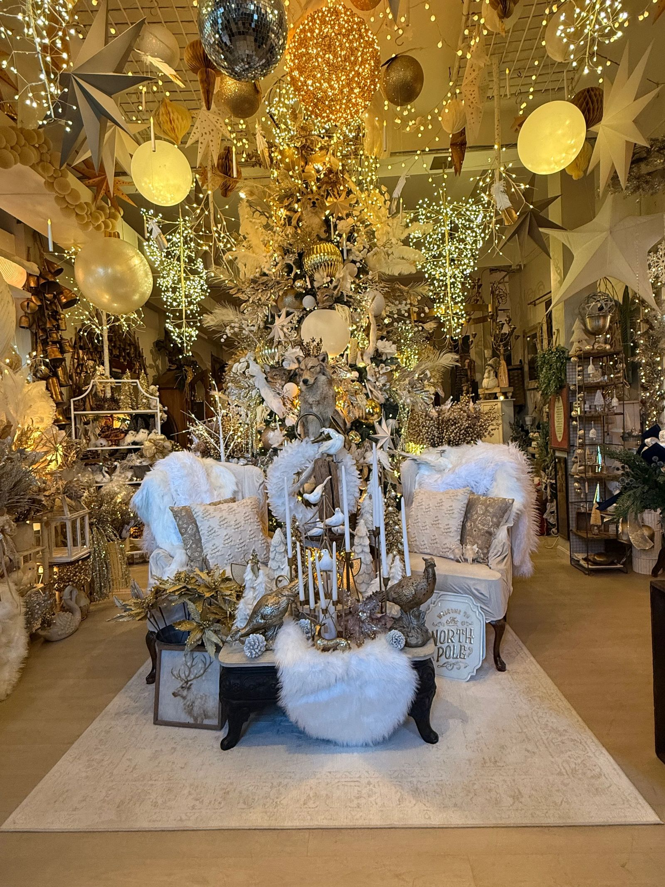
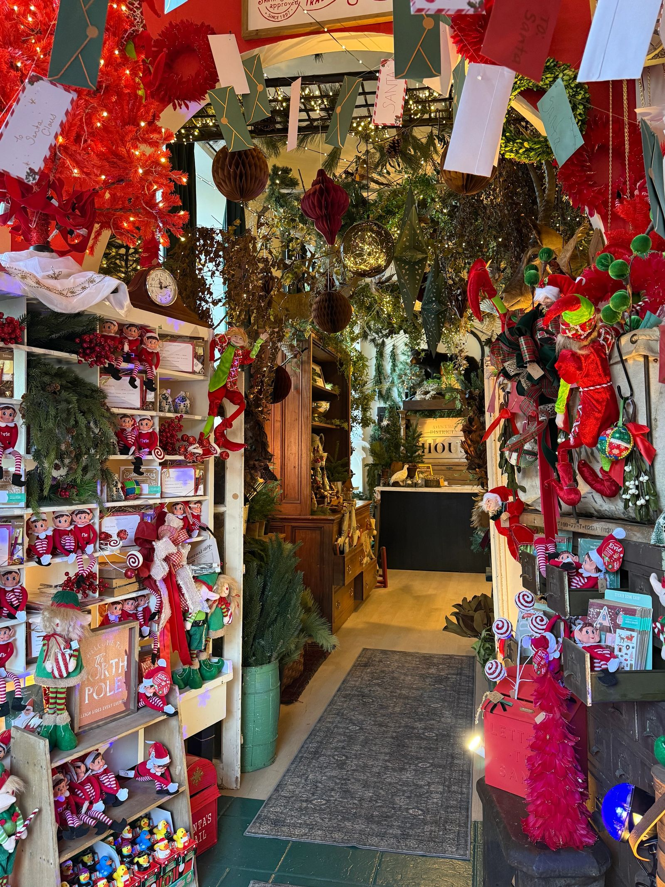
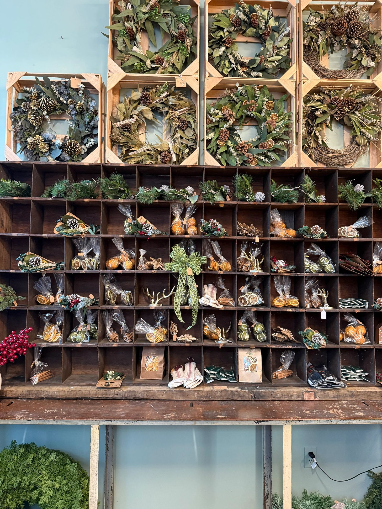
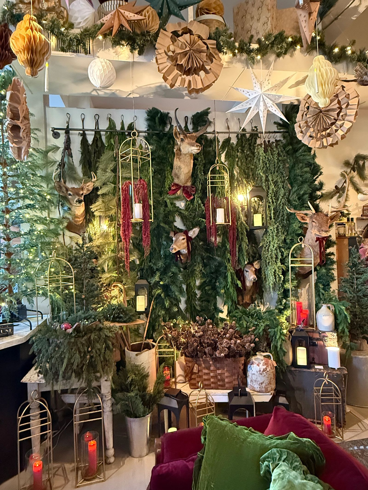

WeekendsAprès ShopEvery Saturday & Sunday until Christmas
Dec 5Chain of Lights10 am – 4 pm
Dec 12Manchaug Stroll4 pm – 8 pm
Small Business Saturday at District V House
Saturday, November 28 · 10 am – 5 pm
Make your holiday shopping a little more magical this Small Business Saturday! Step inside our enchanting Christmas wonderland, where beautiful treasures, festive displays, unique gifts and a little holiday nostalgia await around every corner.
Our friends from 20 Hudson St. Beverage Trailer will be joining us, serving up beer, wine, Prosecco, hot cocoa, coffee and hot chai to keep the holiday spirits flowing!
As a special thank-you for shopping small, enjoy a complimentary gift with purchase, while supplies last.
Gather your favorite people, sip something delicious and experience holiday shopping the way it should be: joyful, memorable and full of Christmas magic.
Every purchase makes a difference and supports our incredible community of small businesses, artisans and makers.
Come for the shopping, stay for the experience and make a little Christmas magic with us!
Après Shop at District V House
Every Saturday (10–5) & Sunday (11–4) until Christmas
Shop ’til you drop… then sip, relax, and stay awhile!
Every Saturday & Sunday until Christmas, 20 Hudson St. Beverage Trailer is joining us for a little holiday cheer!
From cozy hot cocoa, chai, and coffee to beer and wine, mocktails, and specialty sips, there’s something for everyone!
Come experience the Christmas magic, find some one-of-a-kind gifts, and enjoy a little après shop in our historic village!
Because Christmas shopping should be an experience, not a chore!
Shop. Sip. Stay merry.
The Manchaug Stroll
Saturday, December 12 · 4 pm – 8 pm · Free
District V House and Vaillancourt Folk Art turn the 1800s mill village into a winter night out with the Sutton Historical Society and the Sutton Fire Department: carolers, fire pits, holiday food and an outdoor Christmas bar under the lit tree on Manchaug Common.
Welcome to the North Pole
Where Christmas magic comes to life!
The most wonderful time of the year has officially arrived at District V House, and for Christmas 2026, we’ve transformed our historic New England store into a whimsical North Pole Christmas wonderland!
Every year, we dream up something extraordinary for the holiday season, and this year is no exception. Months of imagination, creativity, and a little Christmas mischief have gone into creating an unforgettable shopping experience filled with nostalgia, wonder, and the magic of Christmas.
From the moment you step through our doors, you’ll discover a world of twinkling lights, beautifully decorated Christmas trees, enchanting displays, and unexpected surprises around every corner. Every room tells a different story, inviting you to slow down, explore, and rediscover the excitement and joy of Christmas.

A Christmas shopping experience unlike any other
District V House is so much more than a traditional retail store. Nestled inside the historic Manchaug Company Store in Sutton, Massachusetts, our unique shopping destination brings together an extraordinary collection of antique, vintage, new, artisan-made, and one-of-a-kind treasures.
During the Christmas season, our store comes alive with an incredible assortment of:
Beautiful Christmas ornaments and holiday decorations
Unique and thoughtful gifts for everyone on your list
Vintage and antique Christmas treasures
Festive home décor, greenery, wreaths, and seasonal accents
Furniture, artwork, and distinctive home furnishings
Handmade and artisan gifts from talented small businesses
Nostalgic Christmas collectibles and unexpected finds
Stocking stuffers, hostess gifts, and treasures at every price point
Whether you’re searching for that perfect gift, decorating your home for the holidays, or simply looking for a little Christmas inspiration, there’s something magical waiting to be discovered.

Experience our Christmas Wreath Bar
Our beloved Wreath Bar is back and better than ever! Choose from an incredible selection of wreaths in different styles, sizes, and price points, then personalize your creation with festive ribbons, bows, greenery, ornaments, and decorative accents.
Create your wreath right here in the store with our help, or bring your selections home to make your own holiday masterpiece.
Come for the shopping, stay for the magic
We believe Christmas shopping should be an experience, not just another errand.
It’s about wandering through beautifully decorated rooms, discovering something unexpected, finding gifts that feel truly special, and making memories along the way.
Our goal has always been to create a place that makes people feel something: a little nostalgia, a little wonder, and a whole lot of Christmas joy.
Whether you’re visiting for the first time or returning for another magical holiday season, we invite you to experience the North Pole at District V House.
Bring your friends, bring your family, and bring your Christmas spirit. We can’t wait to share the magic with you!

Why shop with us this Christmas?
Christmas at District V House: a magical New England Christmas shopping experience. Best Christmas shopping in New England!
Each holiday season, District V House undergoes an extraordinary transformation into a Christmas wonderland unlike anything you’ll find in a traditional retail store.
Christmas isn’t simply a season at District V House. It’s an experience.
Step through our doors and enter a world of holiday magic, where elaborately decorated Christmas trees, imaginative themed displays, sparkling lights, nostalgic treasures, and beautifully curated holiday collections fill the historic store from room to room.
Inspired by the wonder and nostalgia of Christmas, our displays are designed to transport visitors into a magical world filled with imagination, warmth, and holiday cheer.
Discover an exceptional selection of Christmas ornaments, holiday decorations, seasonal greenery, wreaths, festive home accents, vintage Christmas collectibles, unique stocking stuffers, artisan-made gifts, and thoughtfully chosen treasures for everyone on your list.
From elegant, traditional Christmas décor and old-world holiday charm to whimsical North Pole-inspired displays, woodland Christmas collections, and nostalgic vintage finds, our store celebrates the many beautiful ways people experience Christmas.
Every corner offers something different, making District V House a wonderful destination for holiday shopping, decorating inspiration, and discovering gifts you won’t find everywhere else.
Whether you’re decorating your home, searching for the perfect Christmas gift, starting a new holiday tradition, or simply looking to experience a little Christmas magic, we invite you to make District V House part of your holiday season.
Come for the Christmas magic. Stay for the treasures. Return for the experience.

Visit District V House
356 Manchaug Road, Sutton, Massachusetts.
Located in the charming village of Manchaug in Sutton, Massachusetts, District V House is a unique holiday shopping destination in Central Massachusetts, just a short drive from Worcester and surrounding New England communities. District V House welcomes shoppers from Worcester County, Central Massachusetts, and beyond.
Discover why our historic New England store is a destination for antiques, vintage shopping, unique gifts, home décor, seasonal inspiration, and an unforgettable Christmas shopping experience.
Christmas 2026 is officially underway, and the North Pole is waiting for you! Discover the treasures. Experience the wonder. Take a little Christmas magic home with you.
District V House: a little unexpected. A lot extraordinary.
Earlier this season: the 5th Annual Christmas Open House
It’s almost time for Christmas at District V House!
Our 5th Annual Christmas Open House is just days away, and we couldn’t be more excited to welcome you back for another magical holiday season!
We’ve been working tirelessly behind the scenes, dreaming up new displays, gathering extraordinary treasures, and preparing to transform every corner of District V House into a Christmas wonderland.
This year, we’re going bigger, more magical, and more spectacular than ever before!
Christmas Open House: Saturday, October 31st, 10 am – 5 pm. From breathtaking holiday displays and one-of-a-kind vintage finds to beautiful antiques, festive décor, thoughtful gifts, and everything in between, the store will be overflowing with Christmas inspiration.
Whether you’ve celebrated every holiday season with us or this will be your very first visit, we can’t wait for you to experience what we’ve created!
Important store closure notice: please note that District V House will be closed all week leading up to our Open House, as we put the finishing touches on our holiday transformation. We will reopen Saturday, October 31st at 10 am for the big reveal!
There’s something truly special about Christmas at District V House, and we are so grateful to share another season of magic, tradition, and memories with all of you. We can’t wait to open those doors and welcome you in!
With love and holiday cheer, the District V House Family. See you Saturday!